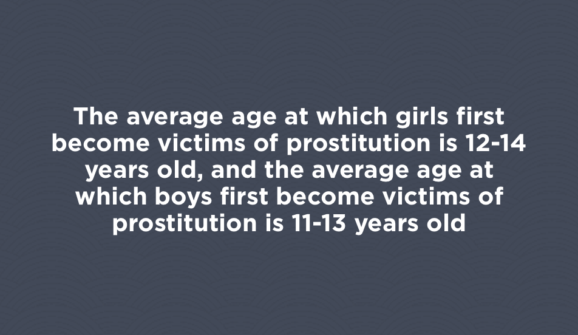

Finkelhor, D., Hotaling, G., Lewis, I. A., & Smith, C. (1990). Sexual abuse in a national survey of adult men and women: Prevalence, characteristics and risk factors. Child Abuse & Neglect 14, 19-28. doi:10.1016/0145-2134(90)90077-7
Hanson, R. F., Resnick, H. S., Saunders, B. E., Kilpatrick, D. G., & Best, C. (1999). Factors related to the reporting of childhood rape. Child Abuse and Neglect, 23(6), 559–569.

National Coalition to Prevent Child Sexual Abuse and Exploitation. (2012). National Plan to Prevent the Sexual Abuse and Exploitation of Children